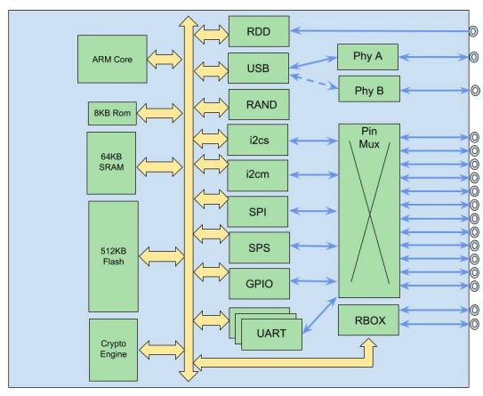
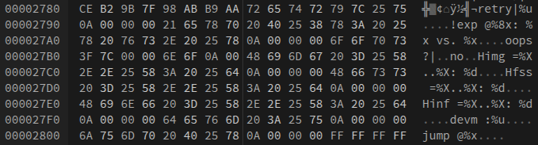
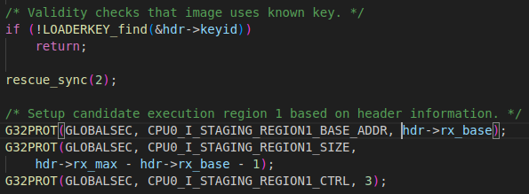
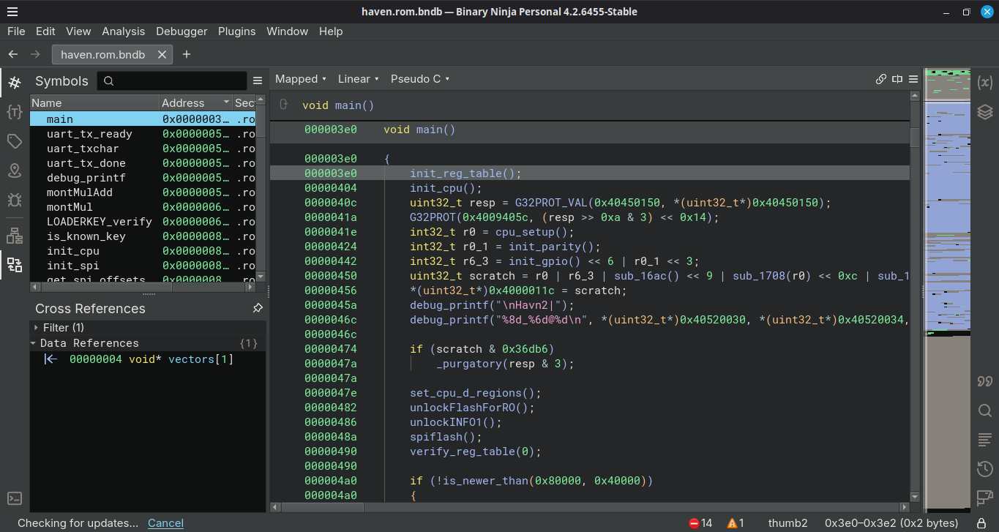
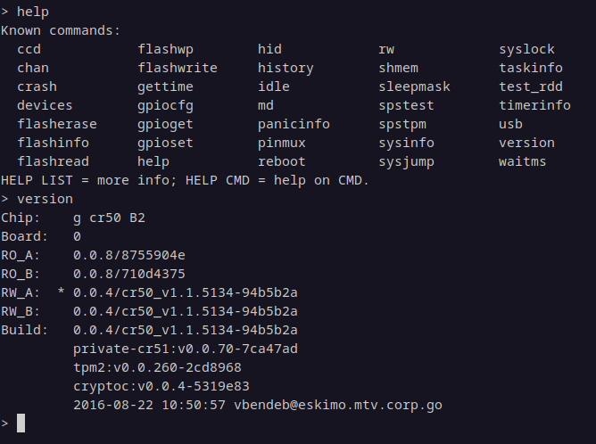
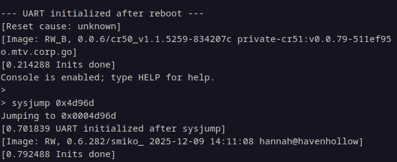

Some Context
Over a year ago now, I was chatting with Writable and some friends about the Sh1mmer patch.
The patch had been on stable for almost a year, and was a Cr50-level patch that basically
prevented the modification of FirmWare Management Parameters (FWMP) if the developer switch
AND the the recovery switch were engaged, which was always true when inside the RMA Shim
environment. At the time, this solution worked very neatly. It prevented users from getting into
developer mode, and a check was added in the FRE screen on the OOBE setup screen that double-checked
FWMP, indicating the device had been enteprise enrolled before and would ignore the value of check_enrollment
in the vital product data, which had previously been relied upon to determine the enrollment state.
Some solutions were found to work around this, including disabling Write-Protection to set the GBB flags to a
value that ignores FWMP (patched R114), allowing booting into devmode to properly remove it, abusing tpm-less keys to preload
encrypted userdata to trick the device into removing FWMP and skipping the FRE check (patched R120), abusing overflows in the
ChromeOS recovery system to gain code execution in verified recovery to properly remove FWMP (patched R125), rebooting the device
at specific times to corrupt the FWMP space or using a DLC import oversight to switch to a custom enrollment server (both patched R132), etc.
To a fault, all of these bypasses were workarounds to the original patch in the Cr50 that stopped unenrollment in
the first place. As time went on though, I began to wonder if there was any way one could get rid of the original
patch. If you've been paying attention to Coolelectronics's blog "Breaking-Cros", you probably
remember this line when they discussed the R111 Sh1mmer patch:
"Since that's a firmware level patch in the TPM itself it can't be downgraded"
Well, that line got me thinking. Control over the Google Security Chip would mean full control of the device, as the GSC has direct
access to flash controllers, the hardware WP state, TPM Non-Volatile memory, and more.
It was that line that sparked an idea that led to a series of events including drama, lots of crashes, and the
reverse engineering of software that probably shouldn't be possible to obtain. How? Well, grab a drink and a snack, and
take a seat.
The Actual GSC Security Model
In order to understand what we actually did, we need to understand our limitations and what
we can and can't do.
The Google Security Chip is a standalone System-on-Chip completely seperate from the
main CPU. Unlike the main CPU, it always gets power unless the battery dies, and only resets when
explicitly told to (usually by gsctool during updates), and gets power before anything else on the board.
Here's a block diagram of the H1 Google Security Chip:

The chip's flash and execution boundaries for write-protection and ACE prevention are handled by a closed-source
custom hardware engine known as GLOBALSEC, short for Global Security. This engine also contains a register known
as Software Level, which basically acts as a permission system to prevent access to certain hardware peripherals
after it's been dropped. Execution regions themselves can only be defined by writing a hardcoded hash to GLOBALSEC
and requesting a Signature Unlock, and once the Software Level reaches medium, this functionality is locked out until
the next chip reset.
When the chip resets, the BootROM (short for Boot Read-Only-Memory) is the first thing executed by the GSC's core. As the acronym suggests,
the BootROM cannot be modified by any means, and is responsible for handling the very first stage of the
GSC's boot process. Because of its immutability, the BootROM is kept closed source, highly confidential,
and during the boot process the RO firmware outright hides it. More on that later.
The BootROM reads a boot header in the "Flash Region" of the chip at the very first and second halves, and checks both
for a valid signature, starting with whichever is newer. If the signature is valid and the payload hasn't been
tampered with, the BootROM executes it, transfering complete control to it.
The RO firmware, now completely in control from the BootROM, does something very similar, reading from 2
offsets in the flash directly after each RO section, both corresponding to an RW_A or RW_B firmware. The
RO firmware validates the RW firmware (foreshadowing), and jumps to either firmware offset accordingly,
depending on which is newer.
The RW firmware, once again completely in control from the RO firmware, handles the rest of the setup and processes.
After dropping the CPU permissions and limiting hardware access, it sets up CCD (Closed Case Debugging) and TPM2,
and at this point vboot seizes control of the primary boot process on the main CPU, using the TPM integrated into
the Cr50/Ti50 RW to store important kernel and firwmare data, and this is the area the Sh1mmer patch resides in.
Extortion - The Bootloader
At first, our search began as just trying to learn about the GSC. Since it was open-source, we decided to start with Cr50,
and quickly I began to notice some things weren't quite right. I started seeing documentation and code snippets referencing
things being in the RO code in chip/g/loader, such as Rescue Mode, that didn't seem to exist. At first I was really confused,
but then I decided to shove an actual Cr50 firmware image into a hex editor, and found this:

As it turns out, not a single one of these strings appears in the Cr50 source tree at all, outside of documents. At that
point I knew something weird was going on, so we decided to try and decompile the firmware. I'll be using BinaryNinja to
view the code here. I developed a simple tool to extract specific sections from GSC firmware images based on the header information,
and with that we could reverse engineer the RO firmware. As I expected, the code was very different, but thankfully since Cr50 open-sourced
Haven's hardware registers, we could at least understand what the firmware is doing... for the most part. You'd think that open source registry
would make Haven the easiest to decompile, but as it turns out, Haven is by far the most hacky and confusing firmware out of all
of the existing Google Security Chip lineups. Regardless of that, after a bit of work, we were able to decompile everything,
and were able to start analyzing. Immediately Rescue caught my eye.
In the firmware updater, there exists checks that prevent downgrading the GSC's firmware, but in Rescue mode,
the RW firmware's values that the firmware updater would usually compare incoming data against can't be trusted
anymore, and thus it could in theory be possible to downgrade the GSC with Rescue (I also figured out that someone
else from a group called Bromine had that idea months prior after we'd finished testing everything, but they'd
never actually looked into it).
According to the GSC docs, Rescue operates over UART on Chromebooks, and according to some schematics, GSC UART is typically
connected to either Servo or C2D2 on the board. Neither of these ports are commonly populated on consumer devices, but luckily
the pins for the ports are still there with the traces connected, so we could solder to the GSC UART Tx, Rx, and GND lines specifically
and use an FTDI adapter to get a full UART console on the GSC.
Unfortunately, the cr50-rescue utility that would normally be used to interface with rescue is closed-source, so instead
Evelyn and I decided to write our own custom implementation known as Shaft to handle the transfer process. After a
few bugs and kinks, we finally had a working version. Rescue will only program the RW image, but that's all we'd realistically
need to downgrade. We settled on downgrading to Cr50 0.5.120 as a test, due to it lacking the Sh1mmer and RMASmoke patches,
and this is what happens:

The image fails to run because Hinf, the INFO hash, didn't match. According to an old document, INFO hash is basically the
hash of read data from a rollback bitmap stored in uncontrollable flash memory. In simple terms, this locks out any older
images that use rollback protection from running once a newer image has run. While there are some RW images that don't employ
rollback protection, they all sit on RO 0.0.10, which uses a different RW keyset than modern Cr50 firmware images, so we can't
go back to older versions, sadly. However, during the rescue process, the entire A and B RW banks get wiped, which takes NVMEM
with it, meaning one could use it as a means to get rid of FWMP, if they so desired.
While decompiling rescue, I noticed some strange behavior where it was zero'ing out the RSA hashes and rebooting at weird times.
The code felt awfully like a patched vulnerability, so I started looking for older Cr50 firmware images. Google's Cloud Bucket
contains an archive of all signed Cr50 firmware images, and after getting our hands on RO 0.0.10 and doing some decompilation,
sure enough, the underlying code had a vulnerability.
Rescue gets launched after a firmware image has been fully hashed, meaning if the image that were hashed contained valid
hashes, and you were to send a malicious firmware image over Rescue and end transfer without requesting a reboot, the loader would
proceed, validating the invalid malicious image against the valid hashes, and RSA verification would succeed, blindly trusting the
image. Unfortunately for us, RO 0.0.10 is incredibly old now, and since RO images can't be downgraded via Rescue, this exploit was
effectively closed off for us (we actually did try to find someone who had RO 0.0.10, and the only person we found with it had it
on a ChromeBox, effectively making it more risk than it was worth). Since it could in theory work for some people, I dubbed the old
Rescue vulnerability "Extortion", and added support for it in our Cr50 fork.
Wanting to look further, we moved on to our next option.
RMASmoke
With everything in mind, the GSC seems like a very secure system. Only Google has the keys that can sign
firmware images, and all other keys don't work at all and any modifications to the firmware image will get
detected in the signature check and firmware image will be entirely rejected.
So, what can we do? We can't run unsigned firmware, and we can't change anything, so is this a dead end? Not quite.
See, buffer overflows exist. Simply put, a buffer overflow is a vulnerability in low-level programming languages like C
and C++ where the program attempts to copy data into a specific destination expecting it to be a specific size,
but it never actually checks if it is that size, allowing attacker-controlled data to be written out-of-bounds. When an overflow occurs,
it basically writes whatever it's trying to write into the buffer... past it. In low-level programming, buffers
are always stored in either the Heap or the Stack, and directly preceding those locations in memory is stored CPU registers.
Because buffer overflows don't stop writing when they reach the end of the buffer, this effectively lets us
modify the stored CPU registers, and this is where things get interesting.
When overflowing the stack, we can strategically place data at various offsets to control what values get placed into
different CPU registers. One of these CPU registers happens to be the "Program Counter", and by setting this register
on the stack with our overflow, the CPU will read the register off the stack and start executing at whatever address
was placed into this register.
So, needless to say, a buffer overflow would be incredibly powerful inside the GSC, as with an overflow we
can manipulate all of the memory inside the GSC and run whatever code we want, and control of memory like that effectively
lets us bypass any and all in-place restrictions. So I went searching for anything potential overflows we could exploit.
While I was searching for buffer overflows in the Cr50 source tree, Writable revealed that he had been holding on to something: RMASmoke.
He revealed he had an out-of-bounds write in the Cr50 that could allow for the manipulation of the RMA auth code, and more.
After a long while of searching for it, finding the actual vulnerability and being mislead it wasn't, he eventually gave me a copy,
and I was able to start researching.
The bug involved an issue in a specific implementation of TPM2 used by Cr50. When you attempt to read NV memory from the TPM, it expects
it to be no larger than 1 kilobyte in size. But, you can actually create NV spaces much larger than that, and if you attempt to read
whatever data you put in the index for more than 1 kilobyte, then there's your buffer overflow.
(Funnily enough, this vulnerability was discovered and patched by Microsoft in their own TPM2 implementation over 8 years ago, but I guess
Google hadn't yet gotten around to it.)
I quickly got to work rewriting Writable's proof-of-concept into a full command line utility and cleaning up bugs, and started thinking of things we could
do with this. Since my goal was to take control of the chip, the first thought at mind was Custom Firmware.
Running Custom Code
With a buffer overflow on the Cr50, we began working on CFW to make it more powerful. At this point the RMASmoke bug report had gone
public, but nobody really knew how to use it and most were already way beyond its patch, so most people completely ignored it.
With a payload to carve out specific sections of GSC firmware images, some assembly analysis, as well as some bad math and graphs,
we found the exact number of bytes needed to overflow the program in order set the Instruction Pointer.
Perfect, that's exactly what we wanted! Now, let's try running custom code. After compiling a custom Cr50 firmware
designed to be looser on restrictions, we write it to the backup region as a fake firmware upgrade (which I would later
find out that Writable had also attempted funnily enough, most know this as Crswifty), and then we perform the overflow
whilst setting the Instruction Pointer to the backup firmware region, and it! ...crashed. Wait, what?
After some poking around in the RO to determine the issue, we noticed a slight problem. See, when I said we could execute any
address, that technically wasn't true. See, when the RO firmware boots, it has to mark the target firmware region as "executable memory"
prior to launching, as seen from the code below:

Of course, the pesky GLOBALSEC takes center stage. How delightful! After a bit more tinkering, we tried and failed to set the Software Level
higher, tried changing the REGION1 address, and even tried doing our own Signature Unlock, all to no avail.
Does that mean this is over? Not quite. See, all this really does is make it so we can only execute code within the active program.
However, we have another option: ROP, short for Return-Oriented-Programming. If you were to take the Cr50 firmware binaries
and disassemble them using a command such as objdump on Linux, you'd get a full layout of the program's assembly.
For those who don't know, assembly is pretty much a set of Instructions that C and Rust code gets compiled into, and is the most basic programming
language possible. On ARMv7-M, the architecture the Cortex-M3 uses (which is the CPU core that gets integrated into the H1 Google Security Chip),
there exists a CPU instruction known as "pop". By abusing other instructions that are strategically placed next to "pop" instructions, we can abuse
pops that copy the Instruction Pointer, and effectively chain various instructions into doing what we want them to do.
With the ability to now chain together existing code, we can do just about everything we could even with ACE, granting us the same
level of control.
The BootROM
With the ability to now control the GSC, we can read/write to anything with relative ease. Disabling WP and enabling factory mode is trivial since we can
just call any function we desire, and the Cr50 will comply without trouble. All said and done though, this exploit is still very limiting.
Not only is it only possible on very outdated Cr50 firmware revisions, but we can't even run Custom Firmware with it.
However, there is one stone left unturned: The BootROM. If we can get control of the BootROM, we would have an unpatchable vulnerability,
since the whole point of the BootROM is that it's not supposed to be modifiable. "But wait!" you say through the screen even though I can't hear you.
"Didn't you just say the BootROM is hidden? Hannah, what the heck! Why do I give you the valuable time of my day?"
Well, as it turns out, that's not entirely the case. After some trial and error (thank you appleflyer!), we were able to use ROP to set
the value of HIDE_ROM back to 0, and with some careful chaining it's trivial to use the USB console to leak memory from the chip. Turns out,
HIDE_ROM just... doesn't do anything. So by printing the bytes from 0x0 to 0x2000, we were able to dump the BootROM over the console to file,
and we could start reverse engineering.

After some work, we were able to fully decompile and make sense of everything. It contains a lot of the stuff you'd typically expect to see in
a BootROM; hardware and power initialization code, RSA verification of the RO image, bootstrap code for manufacturers, and funnily enough
I even found a developer key for older Cr50 RO firmware revisions (0.0.8 and 0.0.9) that is actually enabled on all prod H1's for some reason.
While all that's fun and cool and all, we weren't able to find any direct overflows in the ROM, so an exploit would require a bit more work.
BootCon - Bootstrap Mode, aka SPIFlash
In the BootROM, there exists a feature
known as SPIFlash Bootstrap Mode, where a seperate processor (usually Servo) connected to the GSC's SPI slave can bootstrap the chip with a new
firmware image for provisioning. Since the Servo Header is unpopulated on the grand majority of Chromebooks, this would be relatively difficult
to pull off realistically. But, since it could still be a potential attack vector, we decided to look into it anyway.
SPIFlash is technically intended and publicly documented behavior, but the actual utilities for performing it, much like Rescue, are not public,
only accessible in Google's closed-source cr50-utils repository. But, since we already decompiled the BootROM, we can just create our own implementation
in a command line utility (we chose to integrate it with Shaft due to the similar functionality to Rescue) and transfer the image directly to the SPI
slave over a Rasberry Pi or an FTDI adapter.
After a bit of work to get a connection to the SPI Slave (big thanks to WeirdTreeThing, Evelyn, and Kayla for that!), you can pull the line
H1_DEV_MODE (on some boards referred to as H1_BOOT_CONFIG) to high, then come boot time the ROM will halt the boot process and allow you to
send a new image over the SPI slave. From here, we prepare a full firmware image to be transferred, and send it the H1's way.
While SPIFlash can be used to flash virtually anything to the chip, it can't directly run unsigned code. However, it could put older SignedHeaders on
any slot, meaning we can now downgrade the RO and RW to any version we desire, so long as the header's rollback bitmap is erased (which thankfully
plenty are). This differs from Rescue where previously all older images we'd attempted used the older keyset or had rollback protection on them, whereas
now we can program RO 0.0.9 which still has the old keyset and supports images without the protections we want gone.
Immediately one image that stuck out was the first public release of Cr50, RW 0.0.4:

Immediately when testing 0.0.4, the sysjump and rw commands caught my eye. For those who don't know, Cr50 is based off of CrOS EC (Embedded Controller), a firmware
written for simple embedded systems used for communication with things like the display, the keyboard, etc. On EC, sysjump and rw are completely normal commands
to see, as it's not a locked down system. However, for this command to appear in a signed Cr50 build capable of running on any H1 is highly abnormal, and
a huge security risk, which explains why it was removed just 2 versions later. Since we have SPIFlash now, we could in theory write 0.0.4 to the flash, and
use CCD to sysjump to any address in the GSC's memory we desire, or use rw to poke any memory in the chip. Sure enough, with a bit of work:

Because SPIFlash can modify the RO images, it would also open the door to Extortion on all devices as well, as RO 0.0.10 and lower didn't employ downgrade protection
and thus could run on any INFO state. Although, this was kind of useless, as BootCon was by far less risky and easier, and wouldn't cause a powerwash every reboot.
Since the lines needed to perform Rescue or SPIFlash are disconnected on Chromebook boards, none of this would be realistically possible without a hardware modification,
so this method of GSC exploitation wouldn't be viable for VRP. Still, it illuminates a large chunk of the GSC's history, and with that we decided to
make this public for security researchers alike and those interested in low level development. A little less than 2 years ago this project idea was discussed
in a now dead group, and thus I decided to take the name given to it a long time ago: Smiko.
Conclusions
Despite everything that even made this possible, I still firmly believe that the Google Security Chip is an amazing concept that has been developed
very well by its authors. This project is over a year in the making, and there's still more in progress. Without spoiling too much, there'll be 2 big releases
sooner or later, in regards to NuggetOS and eventually Ti50. More will be announced within the HOv public server and Crosbreaker as time goes on.
I owe a huge thanks to everyone in HavenOverflow that's contributed to this project, and I hope to be able to do more in the future.
Also, welcome to HavenOverflow! How's that for introductions?
Finished writing on 12-25-2025 by Hannah